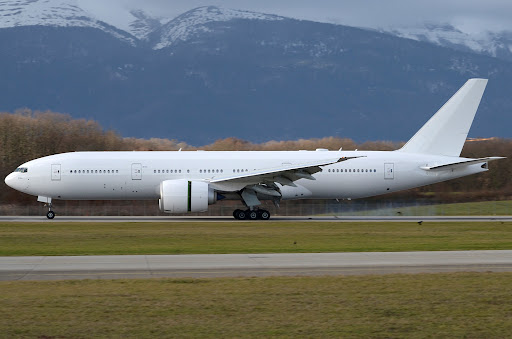
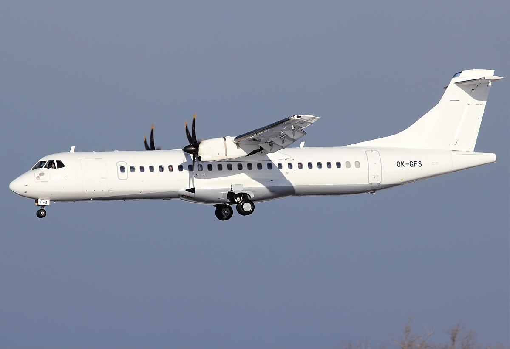

Let's Go Airlines
Boeing 747 |
|
| Our fleet consists of the Boeing 747 which is a large, long-range wide-body airliner manufactured by Boeing Commercial Airplanes in the United States. On September 30, 1968, the first 747 was rolled out of the custom-built Everett Plant, the world's largest building by volume. The 747 was the first airplane dubbed a "Jumbo Jet", the first wide-body airliner. The quadjet typically accommodates 366 passengers in three travel classes. It has a pronounced 37.5° wing sweep, allowing a Mach 0.85 (490 kn; 900 km/h) cruise speed, and its heavy weight is supported by four main landing gear legs with four-wheel bogies each. The 747 has a Maximum Take-Off Weight of 833,000 lb / 377,842 kg and range of 12,000 km - 14,000 km. |
Boeing 777 |
|
|  | Our fleet consists of the Boeing 777 which is an American wide-body airliner developed and manufactured by Boeing Commercial Airplanes. It is the world's largest twinjet. It has a typical 3-class capacity of 301 to 368 passengers, with a range of 5,240 to 8,555 nautical miles (9,700 to 15,840 km). It is recognizable for its large-diameter turbofan engines, six wheels on each main landing gear, fully circular fuselage cross-section, and a blade-shaped tail cone. It is the first Boeing aircraft with fly-by-wire controls. The 777 has a 212 ft 7 in / 64.80 m, 31.6° Wing sweep and a Maximum Take-Off Weight of 775,000 lb / 351,533 kg. It has a maximum speed of Mach 0.87–Mach 0.89 (499–511 kn; 924–945 km/h), with a cruise speed Mach 0.84 (482 kn; 892 km/h). |
ATR 72 |
|
|  | Our fleet consists of the ATR 72 which is a twin-engine turboprop, short-haul regional airliner developed and produced in France and Italy by aircraft manufacturer ATR (Italian: Aerei da Trasporto Regionale or French: Avions de Transport Régional), a joint venture formed by Airbus and Leonardo S.p.A. The number "72" in its name is derived from the aircraft's standard seating configuration in a passenger-carrying configuration, which could seat 72–78 passengers in a single-class arrangement. To date, all of the ATR series have been completed at the company's final assembly line in Toulouse, France. It has a wingspan of 27.05m and a Cruise Speed of 510 km/h with a range of 1,528 km. Its Maximum Take-Off Weight is 23,000 kg with a maximum payload of 7,500 kg. |